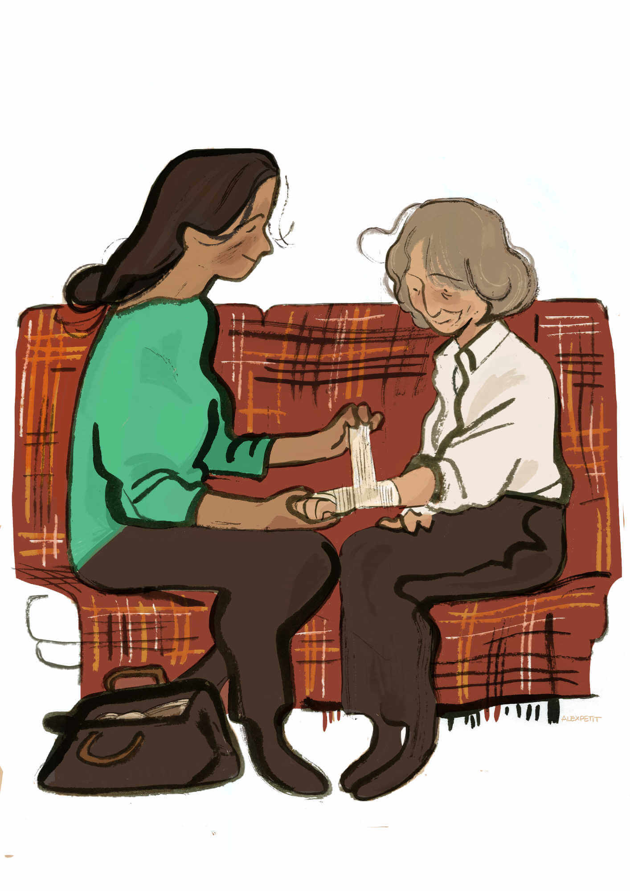

Et si la santé n’était plus un frein au bonheur ? Si demain la maladie et la mort n’étaient plus tenues à distance, compartimentées voire refusées dans nos quotidiens accélérés ? Si la colère, la peur, la tristesse, la détresse, ne s’installaient plus durablement dans les corps isolés, décharnés, dénudés ? Si l’on arrêtait de croire à l’illusion performative de ceux qui seraient dans et en dehors de la vie ? Alors, chacun pourrait retrouver de la légèreté dans ces moments de vulnérabilité trop lourds à porter.
Soigner s’appuierait dès lors sur un changement de nos institutions, la structure et la culture s’enrichissant et évoluant – à notre image d’êtres sociaux – de regards, d’embrassades, de moments de grâce et d’intimité. Les séparations d’antan, motivées par des critères de mise en concurrence liée à de trop nombreuses années de progrès – étant entendu ici comme une réduction forcenée des coûts – seraient reconsidérées. Ne plus se jalouser, réapprendre à s’aimer. La ville et l’hôpital ; le biologique, le psychologique et le social ; le care et le cure ; soigner, enseigner et rechercher ; prévenir et guérir ; faire et faire faire… sont de ces relations noueuses, segmentées, qui ont souffert de leur éloignement.
Se retrouver, c’est commencer par se situer. Au-delà des poncifs, la réaffirmation de la protection sociale est un prérequis du vivre ensemble. Celle-ci n’a plus les beaux et séduisants atours des premiers jours mais s’est muée en cache-sexe rachitique d’une époque aux yeux voilés. Les couleurs de la santé sont complexes, intégrant savamment des pigments tels que l’éducation, la ville, le logement, les transports, le sport, l’écologie… Comme souvent dans ces tableaux, il est difficile une fois achevés de démêler ce qui les compose, mais l’absence d’un élément serait marquante, dérangeante.
À l’heure du rendez-vous, la réconciliation demandera du temps, comme toutes les blessures sérieuses. Ce temps partagé, il se fera par le média du métier, en endossant régulièrement la blouse de l’autre et en analysant au plus près l’activité, puisque toutes ces années sans se parler ne permettent plus que de supposer. Au contact vient la reconsidération, et nous voilà pelle en main à déterrer une dignité oubliée. Trésor enfoui pour la soignante qui accompagne, à rémunérer et à former décemment, et pour le patient qui est accompagné, à écouter dans ses besoins sans jamais le rabaisser à une enveloppe déjà consommée, thérophyte devant l’éternel dont la légitimité de sachant n’est plus à prouver. Ici, les choix de société – projets de santé des territoires – seraient décidés conjointement, de manière éclairée et non réduits à de seuls objectifs de rentabilité. On ne devrait pas entrer au contact de la chair d’autrui pour y trouver des bénéfices.
De l’union de ces hères dépareillés laissés trop longtemps en déshérence – se projetant à vue, sans jumelles – la santé s’inscrit pleinement pour ce qu’elle est. Une richesse et non un coût.
Un concept qui ne s’affranchit pas de la sortie de l’hôpital, de l’âge, de la maladie, des revenus ou de l’éducation. Un moteur et non un frein au bonheur, indépendamment de nos imperfections, que l’on porte une blouse, que l’on soit un peu trop vieux, un peu trop fou, un peu trop pauvre, un peu trop laid, humains.
Alexandra Petit est étudiante en cinéma d’animation à l’école des Gobelins. Avec son trait doux et lâché, elle explore le corps humain et la fluidité et la simplicité des formes.
Alexandra-petit.jpeg
Hugo_Huon.jpeg
Hugo Huon est infirmier et membre du Collectif Inter-Urgences. Il partage, comme toutes ces femmes et ces hommes à blouses blanches, jaunes, vertes ou bleues, une autre idée du soin. Et parce que ce commun échappe encore trop souvent au bon sens, elles et ils se rendent visibles depuis un an pour nous interroger sur la place de la santé au sein de notre cité.